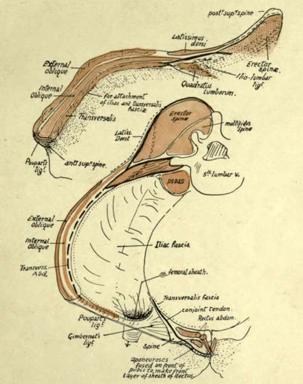
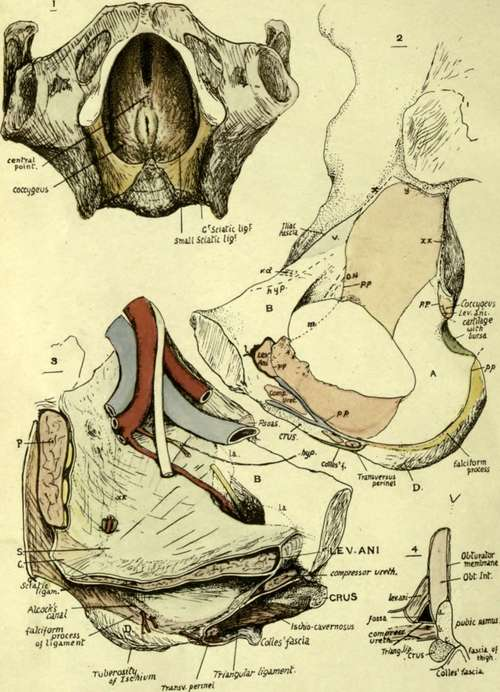

The External Ischio-Pubic Region (Fig. 104). Part 2
Description
This section is from the book "The Anatomy Of The Human Skeleton", by J. Ernest Frazer. Also available from Amazon: The anatomy of the human skeleton.
The External Ischio-Pubic Region (Fig. 104). Part 2
The line a marks the attachment of a fascial layer from the pubic part of fascia lata, deep to edge of Psoas, so can be taken as showing the division between the surfaces covered by Psoas and Pectineus respectively. Notice that the pectineal area can be looked on as a prolongation of the ihac fossa, and the Pectineus is considered to be a portion of Iliacus, which, from the situation of its origin, has a different functional value and therefore has separated from the main sheet : this would account for its nerve supply differing from that of the adductors with which it is descriptively grouped.
Gimbernat's ligament is attached to the front end of the ilio-pectineal hne behind Pectineus, and conjoint tendon again immediately behind this : these two structures are necessarily directly continuous with the front wall of the sheath of the Rectus, the former through its connection with Poupart's ligament attached to the spine, the latter along an attachment in a groove (g) just internal to the spine and immediately external to the origin of Rectus from the crest.
(These arrangements of the structures can perhaps be understood better by reference to the plan in Fig. 110).
Iliacus and Psoas are covered by the Iliac fascia, which is attached to the margins of the fossa In Fig. log the dotted line (./. on the inner margin of the crest marks its attachment here : in front it passes on to the posterior aspect of Poupart's ligament, behind it reaches the ilio-lumbar ligament below the Quadratus lumborum, and from this passes over the Psoas.
Its inner attachment can be picked up 011 the ilio-pectineal line internal to the Psoas : it is attached along this line; reinforced along the Pectineus by the pubic part of fascia lata, and reaches Gimbernat's ligament. Its attachment is from this along the free edge of Gimbernat's to the back of Poupart's ligament, and thus to the crest of the Ilium.
The sheet of fascia can thus be regarded as a simple layer attached round the margins of the fossa, and continuous at the outer and front margins with the plane of transversalis fascia.
When the main vessels, lying on it, proceed under Poupart's ligament, they must carry with them a process of the fascia, attached in front or above to the back of Poupart's and edge of Gimbernat's ligament, and directly continuous behind with the sheet that covers the ihac fossa. The Psoas parvus is inserted into the iliac fascia, spreading out in a fan-shaped aponeurosis, of which the fibres can be traced as far out as the outer half of Poupart's ligament, into the back wall of the femoral sheath, and to the attachment of the fascia on the ilio-pectineal line. This last-mentioned place of insertion of the tendon receives a strong slip, and there is frequently a secondary ridge (ps.p),on the line opposite the iho-pectineal eminence, that marks its attachment.
Fig. 110.-The upper figure is a schematic drawing of the crest of the right ilium to show the attachment of muscles, etc., to it. Compare with Figs. 34, 98 and 109. The lower figure is a schematic representation of the planes of muscles and fascia? related to the bone. Poupart's ligament is stretched between anterior superior spine and pubic spine, and its inner end is expanded to form Gimbernat's ligament; the two deep muscles of the abdominal wall extend on to it and make a " conjoint " muscle arising here and inserted by a conjoint tendon. Conjoint tendon and Poupart's and Gimbernat's ligaments, being only parts of the abdominal aponeuroses, must be continuous with the front wall of the sheath of Rectus abdominis, and the lines of continuous attachment to the bone are indicated in the scheme. See Figs. 104 and 109. The dotted line indicates where the transversalis fascia of the wall becomes continuous with the iliac fascia. The figure also shows how the femoral sheath is derived from the iliac fascia, and how the three lamella; of the Transversalis aponeurosis pass to their vertebral attachments.
Fig. 111. Pelvis seen from below, with the Levator ani in position : on each side, the ischio-rectal fossa is between the muscle and the bone, which is covered in part by Obturator internus. When the perineal shelf, composed of triangular ligament, etc., is thrown across the anterior portion of the opening of the pelvis, it makes a floor for the front part of the fossa on each side ; this can be seen in No. 3. 2. Inner aspect of pelvic part of os innominatum. Right side. Account is given in the text. A; area covered by Obturator internus, but not giving origin to it ; hence smooth and concave. B, area covered by sub-peritoneal tissue, therefore smooth, and crossed under this by obliterated hypogastric artery (hyp) and vas deferens (vd) ; sometimes the Levator ani arises from part of this area (la in No. 3) and makes a slight roughness on the bone. V, situation of external iliac vein. D, inner slope of lower part of ischial tuberosity, covered by fatty tissue continuous with that in ischio-rectal fossa (see Fig. 107). 3. Left side, showing in diagrammatic form the structures in position. B and D as in No. 2. Above and in front of D is the side wall of the ischio-rectal fossa, extending forward to the meeting of the triangular ligament and fasciae. C, Coccygeus and lesser sciatic ligament. 5, spine of ischium. P, Pyriformis. The figure is for comparison with No. 2. 4. Scheme of a section through the front part of the ischio-pubic ramus, to show the various surfaces in relation with the structures represented in the other figures : a, surface for origin of Obturator internus ; b, surface for Compressor urethra? ; c, everted surface for crus.
The pelvic surface can be divided into two descriptive areas by the iho-pectineal line. The upper of these forms the bony floor of the ihac fossa, and has just been described. The iliac fascia makes a common covering for Psoas and Iliacus and is attached to the ilio-pectineal line internal to and behind the Psoas.
Continue to:
- prev: The External Ischio-Pubic Region
- Table of Contents
- next: The External Ischio-Pubic Region (Fig. 104). Part 3